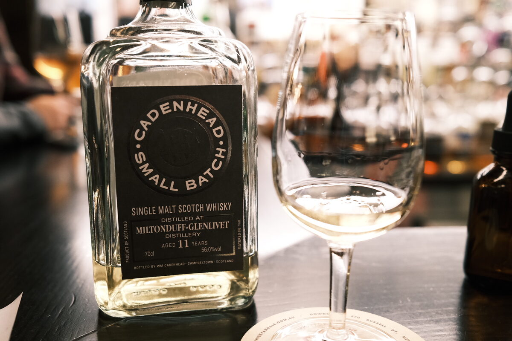

Miltonduff 2008 Cadenhead's 11 years 56% (hogsheads)
Another Miltonduff, similar specs, although this one’s a vatting of four hogsheads.
Colour Straw.
Nose Really fresh. Malty. Menthol, peppermint, lemongrass. Tropical: mangoes and passion fruit, maybe banana? Watermelon rinds… Quite an unyielding nose. Perhaps some water… a little bit too feinty, rubbery… faulty?
Palate Light on. Toffee apples, a little pear, caramel and light whipped cream. Malt. A little bit of jam. With water, caramel and brown sugar.
Finish Light and airy. Malty, sugary. Alcoholic. With water, a bit of menthol.
Comments Really tight. Boring. Potentially faulty. 76/100.

Posted by Dominic on 14 Jun 2021